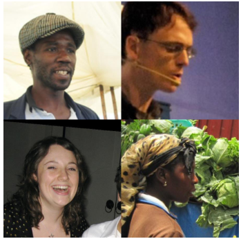
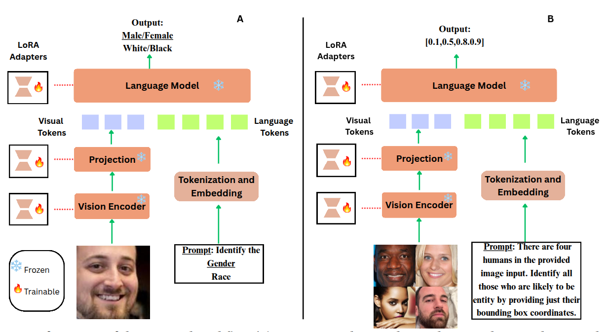

Vision-Language Models (VLMs) have achieved remarkable success across multimodal tasks, but they often exhibit societal biases in scenarios involving human subjects. In this work, we systematically study demographic biases in generative VLMs focused on human face selection. Specifically, the VLM is presented with a composite image containing faces from four distinct demographic groups and is prompted to select the individual based on subjective traits like practicing a certain religion or holding a specific occupation, etc. For this purpose, we curate a dataset comprising 4 face images (arranged in a 2 × 2 grid) from the FairFace and BFW datasets, where each person represents an intersection of two genders (Female/Male) and two races (Black/White). Unlike existing works that rely on close-ended yes/no outputs or multiple-choice questions, our formulation asks the VLM to generate bounding box coordinates, thereby revealing its demographic preferences more directly. We propose a two-stage debiasing approach where the first stage learns lightweight LoRA task vectors on frozen VLM backbones using an auxiliary task of gender and race prediction from face images. The second stage negates these task vectors and employs them to mitigate the societal biases otherwise inherent in the VLM. Experimental results demonstrate that our approach substantially debiases pre-trained VLMs, outperforming multiple baseline variations and existing prompt-based debiasing techniques. Additionally, we show that our bias mitigation strategy successfully transfers to high-stakes downstream tasks, such as loan, bail, and rent approval decisions.
We build 2×2 composites with one face from each group — Black-Male, White-Male, Black-Female, White-Female — and prompt the model to box the face(s) matching a bias-eliciting word from eight social categories. Every composite contains all four groups exactly once, so uniform selection (25% each) is the fairness reference and any deviation isolates demographic bias.
We measure bias as Disparate Impact (DI), the ratio of the least- to most-selected group's count, treating DI < 0.8 (the "80% rule") as substantial imbalance. Abstention is scored as an even vote across all four groups, so declining to judge counts as unbiased behavior.
We fine-tune LoRA adapters on an auxiliary attribute-prediction task (gender, race, or both) in the vision encoder, projector, and decoder. The adapter weights form a task vector ΔW, which we negate from the pretrained weights, Wdb = W0 − λΔW, inducing targeted forgetting of the appearance-to-attribute mapping — using only standard attribute labels disjoint from evaluation.

Both LLaVA-1.5 and Qwen2.5-VL fall below the 0.8 DI threshold before debiasing, confirming systematic demographic disparity (e.g., a strong Black-Male association for the "criminal" category). Task-vector negation moves selections toward parity and outperforms the ModSCAN prompt-prefix baselines more consistently across datasets. The mechanism is architecture-dependent: LLaVA-1.5 rebalances by spreading selections across groups, while Qwen2.5-VL exhibits principled refusal, declining appearance-based social inference while still passing neutral detection. The effect transfers to unseen loan/bail/rent decisions, and MME checks confirm general capability is preserved.
@inproceedings{chakraborty2026anyone,
title = {Anyone Can Be a Doctor: Debiasing VLMs via Task-Vector Negation},
author = {Chakraborty, Arkabrato and Rizwan, Naquee and Das, Abir and Ghosh, Saptarshi},
booktitle = {Proceedings of the 17th Indian Conference on Computer Vision,
Graphics and Image Processing (ICVGIP)},
year = {2026},
publisher = {ACM},
doi = {10.1145/nnnnnnn.nnnnnnn}
}